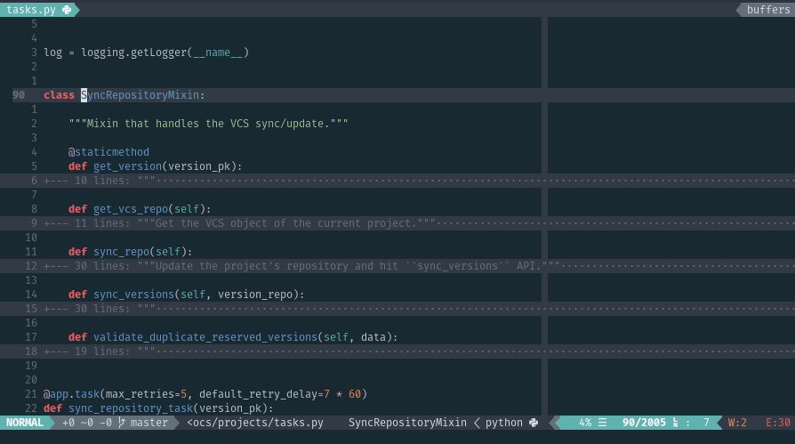

File navigation in Neovim and more
If you work in a project with more than one file, probably you'll be changing files very frequently or search for a file that contains the code or text you are interested in.
Or when you are new in a project, you want to know:
- How it's organized
- Where the current file is located
- What other files are around the file you are right now
- Where is the test of the current file
- Or if you are a C/Cpp programmer, where the header file is
I'll show you some plugins I use navigate in files from a project in Neovim and more.
NerdTree
If you need to know the structure of a project you can use the tree command. But, if you are already in Neovim, you can use the NerdTree plugin.

You can install it with vim-plug:
Plug 'scrooloose/nerdtree'
I have these settings for NerdTree:
let g:NERDTreeChDirMode = 2 " Change cwd to parent node let g:NERDTreeMinimalUI = 1 " Hide help text let g:NERDTreeAutoDeleteBuffer = 1 nnoremap <leader>n :NERDTreeToggle<CR> nnoremap <leader>N :NERDTreeFind<CR>
So, if I want to see the project structure I just press <leader> + n. If I want to see the files that are around the current file, I just press <leader> + N.
If you like icons, you can get it in NerdTree with Vim devicons.
You can navigate on NerdTree like any other buffer. For more information, read the manual :help NerdTree.txt.
FZF & Ripgrep
FZF is an interactive fuzzy finder for the command line that can be used with any list.
Ripgrep is an alternative to grep, it respects your .gitignore file by default. And it's super fast. Ripgrep can be used together with FZF.

You can install ripgrep with:
# Ubuntu sudo apt install ripgrep # Fedora sudo dnf install ripgrep
For other OSs, read this.
FZF has a plugin for Neovim (it installs the binary package too), you can install it with:
Plug 'junegunn/fzf', { 'dir': '~/.fzf', 'do': './install --all' } Plug 'junegunn/fzf.vim' " General fuzzy finder
Now you can use the commands:
- :Files to fuzzy search all files in the current directory.
- :Rg to fuzzy search across all files using ripgrep.
- :BLines to fuzzy search on all lines of the current buffer.
- :Buffers to fuzzy search all open buffers.
I have these settings for FZF:
" Prefix all commands with Fz, " so Files is Fzfiles, Rg is FzRg, etc. " It's useful to autocomplete all fzf commands using :Fz<tab> let g:fzf_command_prefix = 'Fz' " Keeps the history of previous searches. " You can use ctrl-n or ctr-p to navigate the history on a FZF window let g:fzf_history_dir = '~/.local/share/fzf-history'
For more commands and options, read the manual :help fzf-vim.
Vim-altr
When you are editing a file, you may want to check its tests. Or if you are a C/Cpp programmer, you may find yourself changing between the source and header file.
Vim-altr can help you with these tasks.

You can install it with:
Plug 'kana/vim-altr' " Altern between files
I have these settings for vim-altr:
nmap <leader>a <Plug>(altr-forward) nmap <leader>A <Plug>(altr-back)
To altern between files I just press <leader> + a. To see more options and how to define your own rules, red the manual :help altr.txt.
Git
FZF allows you to pass any list and filter those elements. When you find yourself in big projects with several branches is easy to get lost.
{kind=link}
I wrote this plugin that list all your branches using fzf.vim.
Plug 'stsewd/fzf-checkout.vim'
Use :GCheckout or :GCheckoutTag.
Comentarios
Comments powered by Disqus